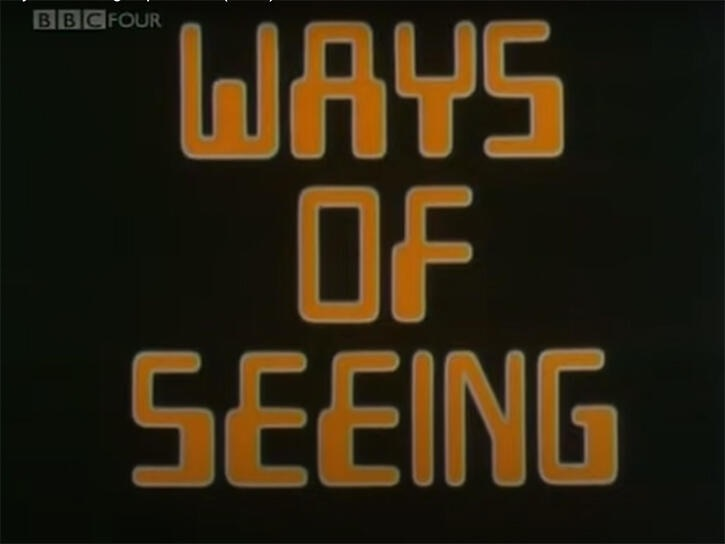
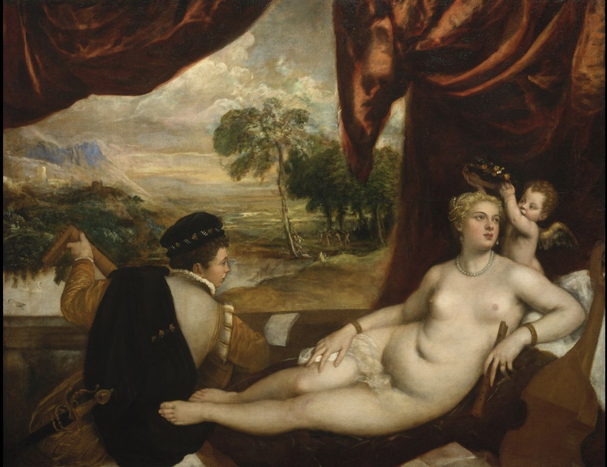

What is your favorite episode of "Ways of Seeing"?
Sohini's Favorite
In the first episode of this series, Berger establishes that paintings have traditionally been used to convey a sense of power and authority. He discusses that as a result, these pieces of art are not realistic but only representations of the beliefs and social structures of the time. For example, perceptions of women and gender roles. Berger continues to discuss the ways that women are objectified and sexualised in these paintings and how that not only reflects the inherent social structures that governed society at that time but also contributed to reinforcing them. I found this particularly interesting because I have examined the portrayal of women in advertising and created a series of photographs, "Sex Sells", that satirize the concept. As a result, I really enjoy the fact that Berger's examination of popular artwork is informed by socially conscious and critical thought.

Siya's Favorite
The fourth and final episode of John Berger's 1972 BBC television series "Ways of Seeing" is titled "Episode 4". In this episode, Berger talks on how images influence how we perceive the past and the present, as well as how they might be employed to subvert prevailing narratives. In general, Berger's message in this episode is that pictures are a powerful tool for forming our perception of the world and that by challenging the prevailing power structures and developing new images and narratives, we may build a more just and equitable future.
Peter's Favorite
The video that I enjoyed the most was episode 2. This episode focuses on how European oil paintings were used to demonstrate power and status in Western society, primarily against women. Many of the paintings that were included in this video included nude women and that was vital to the conversation. A line that I feel summarizes this video nicely is this:
“To be naked is to be seen by oneself. To be nude is to be seen by others.”
I rarely thought about the reasons why women were made out to be nude in these oil paintings but finding out that it is due to having control of power started to make things click. In art, nudity is meant to be a sight for those who are clothed, yet those who are clothed are the men who sometimes appear in these paintings. Women's bodies are subjected to the viewing pleasure of their male counterparts and this suggests the belief that women are objects in the eyes of men. Often gawking at the bodies of the naked women, male figures linger across the canvas of the painting.
It is also common for female figures to be seen looking off past the frame as well as being at rest. Berger says that female figures in these paintings are rarely moving around because they are meant to portray this submissive image adhering to the male gaze. This gaze can be from the men in the paintings or the gaze of the audience looking at the painting.
